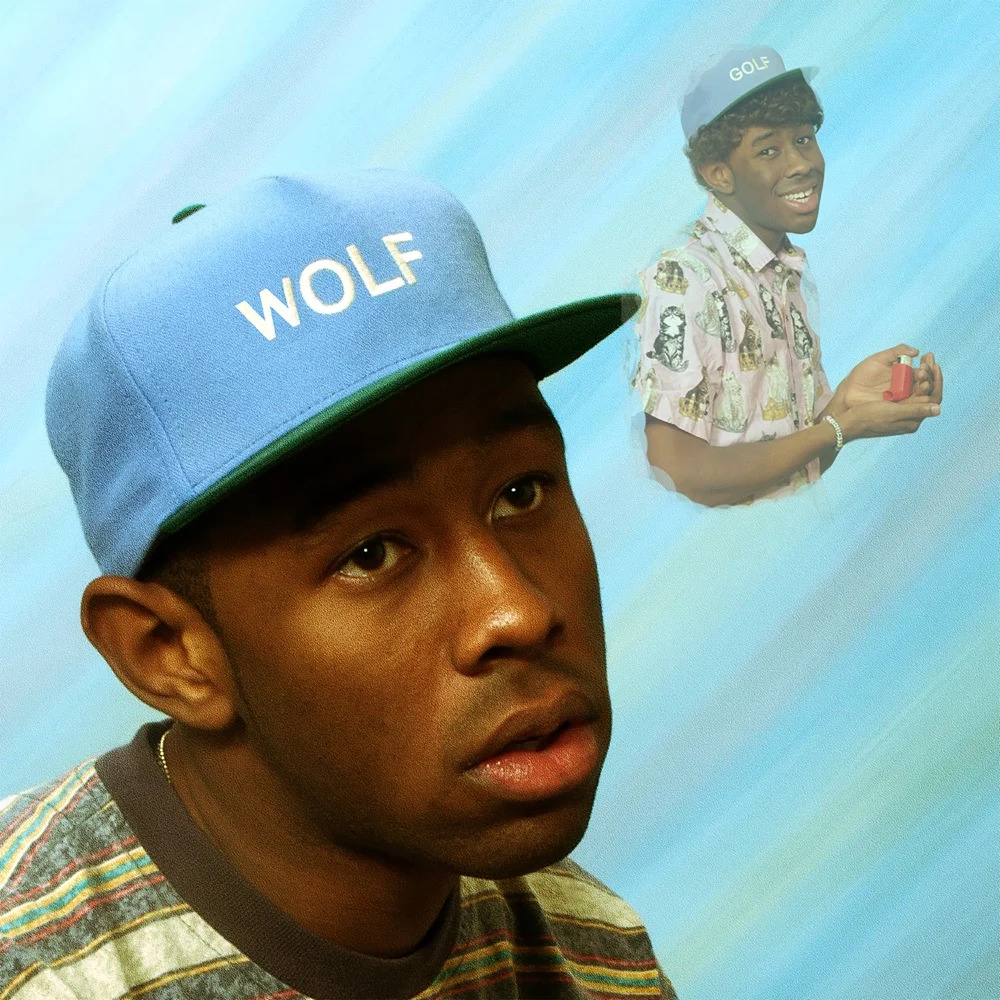

WOLF - Tyler, The Creator

AVALIAÇÃO GERAL
Detalhes
- Álbum
- WOLF
- Artista
- Tyler, The Creator
- Lançamento
- 2013
- Tipo
- Álbum de estúdio
- Gêneros
- Hip-Hop, Alternative Hip-Hop, Jazz Rap
Faixa a faixa
- Wolf91
- Jamba78
- Cowboy88
- Awkward75
- Domo2372
- Answer82
- Slater90
- 4879
- Colossus89
- PartyIsntOver/Campfire/Bimmer92
- IFHY95
- Pigs67
- Parking Lot62
- Rusty97
- Trashwang73
- Treehome9592
- Tamale90
- Lone91
Sobre o álbum.
Terceiro álbum de estúdio de Tyler, lançado em 2 de abril de 2013 pela Odd Future Records. Ele mesmo produziu quase tudo. O disco gira em torno de personagens como Wolf Haley, Sam e Salem, numa história de colônia de férias que dá o tom sombrio e narrativo do projeto. Tem participações de Frank Ocean, Erykah Badu e Pharrell, além de nomes do Odd Future, como Hodgy e Domo Genesis.
Análise.
Aqui o Tyler está no meio da transição entre a fase mais agressiva do Goblin e a sofisticação musical dos discos seguintes. O álbum tem uma sonoridade única com sintetizadores densos, uma combinação diversa de instrumentos como trompetes, violinos e samples de jazz, com certeza o que o torna tão único é a narrativa de personagens e uma vibe sombria de verão. Faixas como “Domo23” mostram o lado explosivo, enquanto as mais calmas como "Treehome95" já anunciam o artista que ele viria a ser. Não é perfeito, e algumas piadas envelheceram mal, junto com elas "Trashwang" e "Parking Lot" mas é um disco com muita personalidade, criatividade e inegávelmente carinho, carinho esse que vale pelo valor histórico na carreira dele.